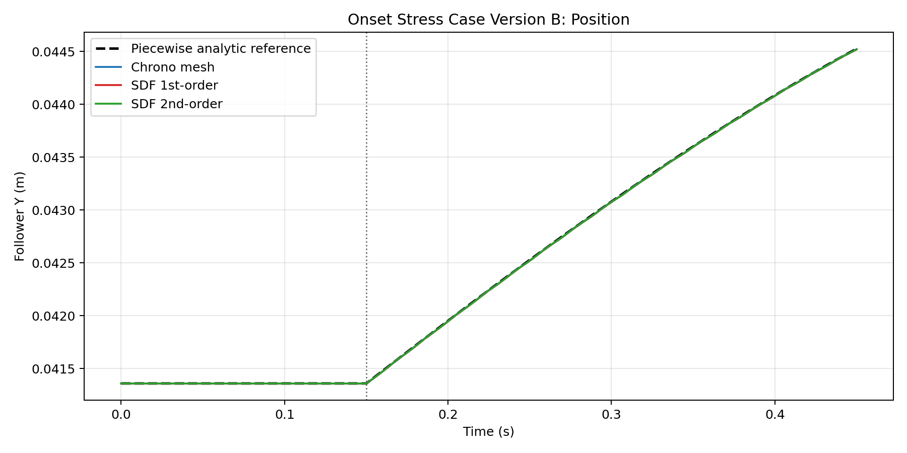
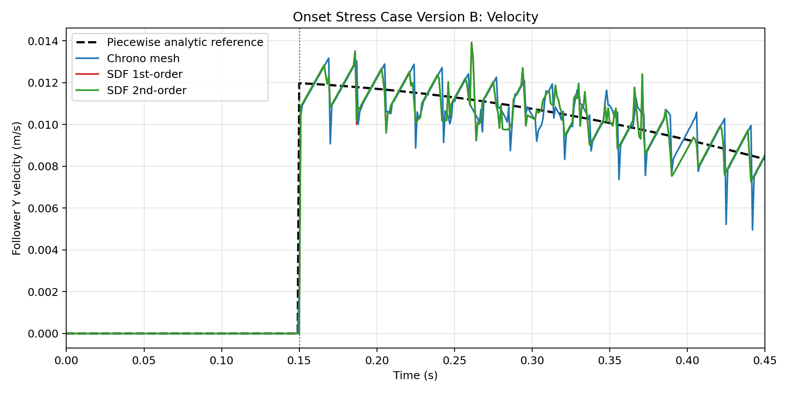

Version B adds a weak follower return spring-damper so that, after first contact, the roller remains close to the cam envelope instead of flying ballistically. This is the benchmark intended to validate post-onset sustained sliding against the same piecewise analytic reference used in version A.
Cam radius: 0.030 m
Eccentricity: 0.006 m
Roller radius: 0.010 m
Anchor Y: 0.000000 m
Rest length: 0.041360 m
Stiffness: 680.0 N/m
Damping: 50.0 Ns/m
Motor speed: -2.000 rad/s
Step size: 0.0010 s
Total time: 0.450 s
Reference onset: 0.15 s
| Method | Runtime (s) | Pos RMSE (m) | Vel RMSE (m/s) | Late Vel RMSE (m/s) | Vel Max Abs (m/s) | Detected motion onset (s) |
|---|---|---|---|---|---|---|
| Chrono NSC native mesh | 63.540 | 0.000003 | 0.000860 | 0.000885 | 0.009924 | 0.15 |
| SDF 1st-order | 124.531 | 0.000004 | 0.000856 | 0.000808 | 0.011978 | 0.151 |
| SDF 2nd-order | 124.536 | 0.000004 | 0.000856 | 0.000807 | 0.011978 | 0.151 |

